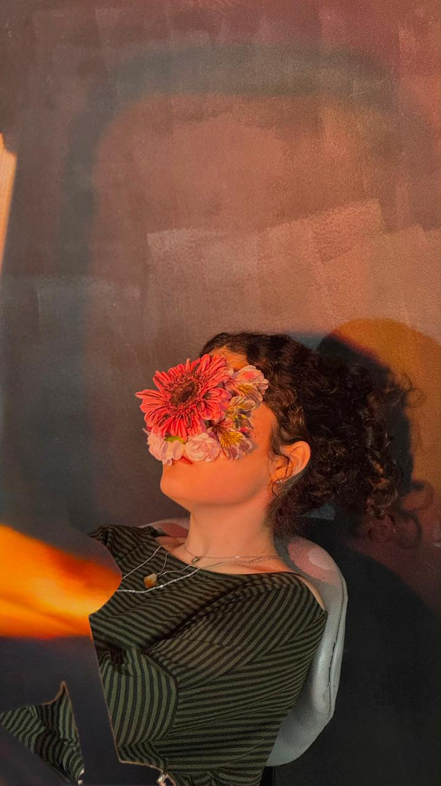

Através da direção, arte e fotografia, busco traduzir a psicologia das interações humanas e o ritmo da vida real. Meu trabalho une enquadramentos rigorosos e minimalismo para revelar a poesia do comum.

Estudante de Cinema e Audiovisual na ESPM, movida pela paixão artística de observar o mundo com calma e precisão, capturando os detalhes que normalmente passariam despercebidos. Com foco em direção de arte, roteiro e fotografia, meu trabalho investiga as interações humanas e o ritmo imperfeito do cotidiano. Busco inspiração no minimalismo estético, na delicadeza da luz natural e na força da música para ditar narrativas. Ao combinar enquadramentos rigorosos e composições criativas, meu objetivo é extrair poesia do comum e traduzir a complexidade da mente humana em imagens reflexivas.
[ CINEMA INDEPENDENTE / FOTOGRAFIA ]
Para novos projetos cinematográficos, ensaios conceituais ou direções artísticas, entre em contato através das redes oficiais.